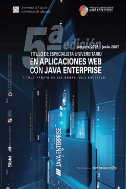

Introducción
Por quinto año consecutivo presentamos el Título de Especialista Universitario en Aplicaciones y Servicios Web con Java Enterprise. Se trata de un título de postgrado de 255 horas organizado por el Departamento de Ciencia de la Computación e Inteligencia Artificial (DCCIA) de la Universidad de Alicante impartido de Octubre de 2006 a Mayo de 2007.
La experiencia de estos años nos permite ofrecer una formación de calidad, con claros objetivos y con contenidos bien definidos orientados a hacer de ti un experto profesional informático en el campo de Java Enterprise. En el sitio web www.jtech.ua.es puedes encontrar más información sobre las ediciones previas del título de especialista y otros cursos que hemos organizado. En el sitio www.jtech.ua.es/jornadas puedes encontrar información sobre la I Jornada de Tecnologías Java celebrada el pasado mes de Mayo de 2006 y organizada por el Título de Especialista.
Los contenidos del curso están centrados en las tres certificaciones que ofrece Sun Microsystems sobre esta plataforma: Desarrollador Certificado de Componentes Web, Desarrollador Certificado de Componentes de Negocio y Experto Certificado en Arquitectura Java. El curso te proporcionará una formación teórica y práctica fundamental a partir de la que podrás preparate con éxito para cualquiera de estos niveles de certificación.
La metodología del especialista será fundamentalmente práctica y basada en el desarrollo incremental de distintos proyectos de aplicación. El número reducido de estudiantes (máximo de 20 alumnos) nos permite una formación muy personalizada.
Algunos comentarios de estudiantes que han cursado la cuarta edición del especialista (recién finalizada):
Me ha gustado la calidad y lo actualizado de los contenidos del curso.
He aprendido bastante sobre Java y sobre cómo aplicar estos conocimientos de forma efectiva.
Cuando me matriculé en el especialista buscaba aprender Java y buscar una alternativa profesional. El curso ha satisfecho mis espectativas; tengo una visión global de J2EE con la que puedo profundizar en cualquier aspecto de estas tecnologías.
El curso ha sido satisfactorio. Cubre las expectativas planteadas. Lo mejor del mismo es el material proporcionado y el interés de los profesores.
En resumen, este Título de Especialista pretende convertirte en un excelente profesional y experto en tu campo. Te preparará para afrontar complejos proyectos informáticos, seleccionar las tecnologías adecuadas para cada uno de sus componentes, diseñar la arquitectura de las soluciones propuestas y establecer una metodología de trabajo para su desarrollo.